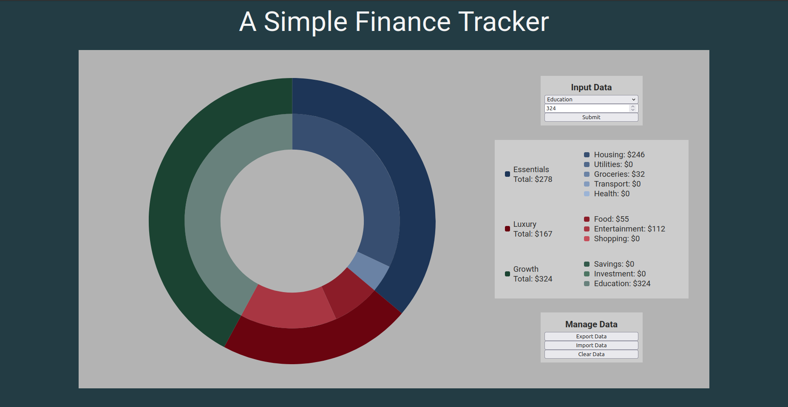
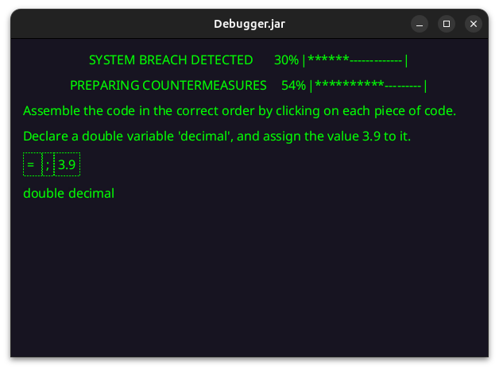

A simple, lightweight finance tracker built using HTML and JavaScript. CSS and Chart.js were used for rendering and displaying the user interface. Users can enter their spending data into the app, which is rendered in an easy-to-read format with nested pie charts and a legend for clarity. Categories and subcategories are clearly relayed, making sure that users are able to understand exactly where their money is being spent. Data persists over multiple sessions and is kept completely offline in the browser's local storage, guaranteeing that information is not sent to any external sites. User data can be exported, imported, and deleted easily, allowing users to transfer their data to different devices or browsers.

A simple, point-and-click puzzle game written in Java, focused on building and debugging lines of Java code. The game utilizes JavaFX for the user interface, and the SQLite JDBC Driver for SQLite database access. Train and hone your Java skills by assembling code in the correct order, while also solving syntax errors.
You will be required to have JavaFX 23 installed in your system to run the JAR file!
You will be required to have JavaFX 23 installed in your system to run the JAR file!